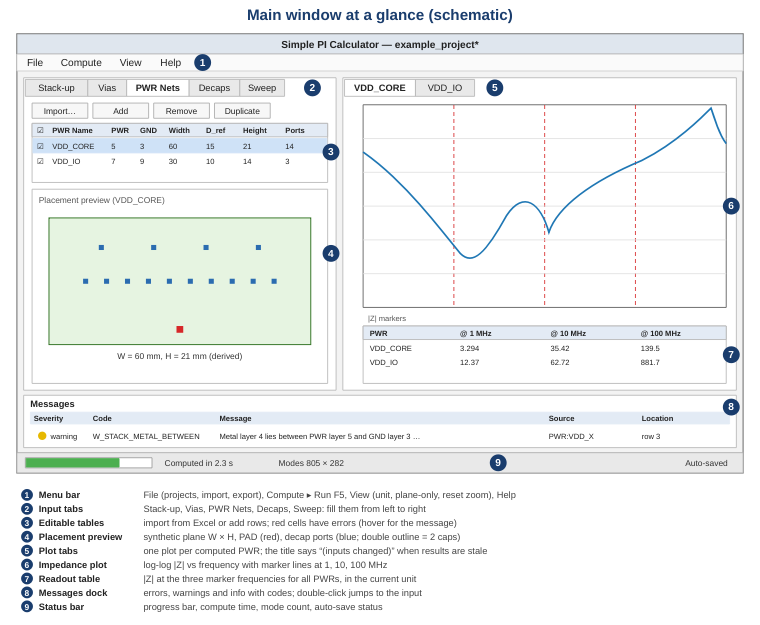

This page walks you through the main window and a complete computation, first with the bundled example project and then for your own board.

Figure 1 – Main window (schematic). Inputs on the left, results on the right, messages at the bottom.
The window is split into an input side (left) with five tabs that you normally fill from left to right, and a result side (right) with one plot tab per computed PWR net and a readout table. The Messages dock at the bottom lists all errors, warnings and information with a code; double-click a message to jump to the input that caused it. The splitter between both sides can be dragged; the layout is remembered.
Choose File ▸ Open Example Project. The example contains an 11-layer stack-up, two PWR nets
(VDD_CORE and VDD_IO) and four decap rows using the bundled models
cap_0402_100nF.mod and cap_0603_10uF.mod. Help ▸ Open Examples Folder
shows the Excel and model files, which are good templates for your own files.
The table lists every layer with its number, name, type (Metal or Dielectric),
thickness, conductivity, Dk, Df and the depth of its top face (z_top). Below the table the
cross-section preview highlights the PWR/GND pair of the PWR row selected in the PWR Nets tab.
Use Import… to load another Excel file and Re-import after you edited the file in Excel.
The file format is described in Stack-up Excel file.
Here you set the via geometry that is common to all PWR nets: drill diameter (0.2 mm), anti-pad diameter (0.5 mm), via pitch (distance between the PWR via and its GND return via, 1.0 mm), vias per decap (2 = one PWR via + one GND via) and PAD via count (number of PWR/GND via pairs at the IC, 1). The read-only labels show the derived via length to the nearer plane, the loop inductance and the port widths for the selected PWR. See Via settings.
Each row is one power net: name, PWR layer, GND layer and the plane width W. The grey columns are derived: D_ref (largest decap distance), plane height H = 1.4 × D_ref, number of ports, dielectric thickness d, effective εr and plane capacitance. The placement preview below the table draws the synthetic plane of the selected row: the PAD is the red square, decap via sets are blue squares (a double outline means two capacitors share the via set). Untick Enabled to skip a PWR. See PWR list.
Each row is a group of identical capacitors assigned to one PWR: model file, count, Distance to PAD and the Dummy Cap check box. The filter box at the top shows the rows of one PWR (it follows the selection in the PWR Nets tab). The derived columns show the number of via sets, the capacitance at 100 kHz and the self-resonance frequency (SRF) of the model. Select a row and press Preview model to plot the capacitor impedance alone. See Decap list, SPICE models and Touchstone models.
Default sweep: 100 kHz to 1 GHz, 400 logarithmic points. Frequencies accept engineering suffixes such
as 100k, 2.5MHz, 1G. Tick Show plane-only curve to also plot
the bare plane without decaps. See Sweep settings.
Press F5 or choose Compute ▸ Run. The inputs are validated first; if there are errors, they are listed in the Messages dock and nothing is computed. During the computation the status bar shows a progress bar; press Esc (Compute ▸ Cancel) to stop. A PWR that fails (e.g. missing model file) gets a red tab icon, the other PWRs are still computed.
Each plot shows |Z| at the PAD versus frequency on log-log axes, with red dashed marker lines at 1, 10 and 100 MHz and the exact |Z| value next to each marker. The readout table lists the same values for all PWRs. For the example you should see approximately:
| PWR | |Z| @ 100 kHz | |Z| @ 1 MHz | |Z| @ 10 MHz | |Z| @ 100 MHz |
|---|---|---|---|---|
| VDD_CORE | ≈ 39 mΩ | ≈ 3.3 mΩ | ≈ 35 mΩ | ≈ 140 mΩ |
| VDD_IO | ≈ 152 mΩ | ≈ 12 mΩ | ≈ 63 mΩ | ≈ 880 mΩ |
VDD_IO is much higher above a few MHz mainly because its planes (layers 7/9) are 1.1 mm below the Top surface, so each via loop is about 16 times more inductive than for VDD_CORE (layers 5/3). Details on reading the plot: Results and plot.
File ▸ Export writes the curves as CSV or XLSX and the current plot as PNG. Your work is
auto-saved continuously; use File ▸ Save As… when you want a named .spical.json project
file to share or archive. See Projects and auto-save.
Tips for what-if studies.
|
| Key | Action |
|---|---|
| F5 | Compute ▸ Run |
| Esc | Cancel a running computation |
| Ctrl+N / Ctrl+O | New project / Open project |
| Ctrl+S / Ctrl+Shift+S | Save / Save As |
| Ctrl+0 | Reset zoom of the plot |
| F1 | Help contents |